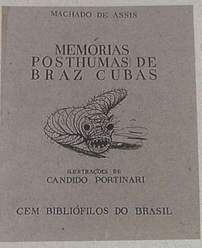

Professor: Matheus
Observe o anúncio da campanha abaixo para responder ao que se pede.
a) Para construir sua mensagem, o anúncio explora os sentidos de termos homônimos. Identifique a palavra cujos homônimos são apresentados na campanha e o tipo de homonímia em que se classifica.
b) Explique os dois significados estabelecidos no anúncio a partir do uso dessa homonímia.
Leia o trecho da canção de Marcelo Jeneci e responda ao que se pede:
Qual o porquê?
De tudo ser como é quando termina
De alimentar um sonho enquanto ainda é dia
De viver à espera do que já morreu
Qual o porquê?
Da história que persiste na memória
Da gente não saber quando é que é a hora
De romper com aquilo que se já viveu
Qual o porquê?
De ter a qualquer preço uma alegria
De se enganar que a gente ainda poderia
Encontrar alguém melhor pra se querer.
Marcelo Jeneci e Paulo Carvalho. "Qual o porquê".
Nos primeiros versos de cada estrofe, o eu lírico repete a pergunta "Qual o porquê?". Considerando que o vocábulo "porquê" foi adequadamente empregado, explique por qual razão os compositores não poderiam ter usado a forma sem acento "porque".
Leia o trecho da notícia para responder à questão.
Ainda Estou Aqui vai estrear na Netflix americana. A plataforma confirmou neste sábado (3) que o filme vencedor do Oscar entrara no catálogo no país no próximo dia 17 de maio. [...]
Ainda Estou Aqui fez historia e deu ao Brasil seu primeiro Oscar de todos os tempos. O longa ficou com prêmio de Melhor Filme Internacional, enquanto o principal vencedor da noite foi Anora, com cinco estatuetas, incluindo a de Melhor Filme, Melhor Direção para Sean Baker e Melhor Atriz para Mikey Madison. Baker quebrou um recorde do Oscar ao vencer quatro prêmios pelo mesmo filme, um feito inedito.
Ainda Estou Aqui é ambientado no Brasil de 1971, e mostra um país em crise e sob o controle cada vez maior da ditadura militar. Baseado nas memórias de Marcelo Rubens Paiva sobre sua mãe, Eunice Paiva, a história veridica acompanha uma mãe de cinco filhos que é obrigada a se reinventar como ativista quando seu marido é sequestrado pela Polícia Militar e desaparece sob sua custodia.
Adaptado de STRAZZA, Pedro. Omelete. 03/05/2025.
Reescreva, com as devidas correções, apenas as palavras sublinhadas em que a acentuação necessária está ausente.
Leia o trecho do artigo para responder à questão
A sociedade brasileira é ainda uma sociedade preconceituosa. Os mais pobres são constantemente discriminados, e esse fato se agrava quando essa parcela da população não tem acesso à educação de qualidade. Nesse sentido, o falar e escrever que fogem à norma padrão da forma culta da língua portuguesa são também alvos de críticas e pretextos para atitudes preconceituosas. O preconceito linguístico, como o próprio nome diz, é o pré-julgamento de pessoas com base na linguagem verbal. Ele parte do pressuposto de que só existe uma língua portuguesa digna deste nome, a ensinada nas escolas, explicada nas gramáticas e catalogada nos dicionários. A partir daí, aquele cujo discurso desvia dessa língua "correta" é discriminado e reprimido. O Brasil não tem uma unidade linguística, assim como não tem uma unidade socioeconômica e cultural. O preconceito linguístico nada mais é do que um reflexo do real preconceito sofrido pelas pessoas de classes sociais mais baixas. Assim, faz-se necessário combater também essa modalidade de preconceito. Para isso, alguns pontos principais devem ser considerados, como a identificação do preconceito, a mudança de atitude e, principalmente, a definição do que é erro e de como deve ser ensinado o português nas escolas.
Adaptado de MARTINS, Sara Baptista. O preconceito linguístico e a análise do discurso.
a) Explique por que a definição do que é considerado "erro" é uma questão central no combate ao preconceito linguístico.
b) Exponha, sucintamente, de que maneira o ensino da língua portuguesa nas escolas pode valorizar a diversidade linguística sem deixar de instruir sobre a norma padrão.
Leia o trecho da crônica abaixo para responder à questão
A 1ª vz q abri o e-mail e dei de cra c/ uma msgm assim, naum entendi nd. Pnsei q era pau do outlook, plbma do cputador. Naum, nd dsso: era soh + uma leitora da KPRIXO que flava essa stranha lihngua da internet. Como a kda dia que passa, rcbo + msgs nesse dialeto sqzito, percbi q, ou aprendia eu tb a tklar assim, ou fikava p trahs. Na natureza nd c perde, nd c cria, td c transforma: tinha xgado a hr de eu tb me transformar.
Minha 1ª atitud foi tklar para Ehrika, uma garota que screv nessa lihngua, e prgntar como eu fazia p aprendr. Ela flou o sgte: "tipo...eh soh trocar CH por X, Ç por SS, H em vez de acento (é/eh;só/soh) e comer o máx d letras possihvel. Entendeu?" O q naum entendo eh pq tnta complicassão. Era taum fahcil scrver o bom e velho port [...]
Sei lah pq, + tenho minhas nohias. A histohria da humanidad estah toda em livrs, escrts com o portugs culto, cheio de vogais, acentos, vihrgulas, pontos e td +. Serah q, no futuro, os livrs vaum ser traduzids para a internet? "Hst, do Br: Krta de P. Vaz de Cmnh sobr desc. Do BR..."?! Pelo msnger vaum circular poemas d Drummond assim: "Tnha 1 pdra no ½ do kminho, no ½ do kminho tnha 1 pdra..."?! Klaro, mlhor screvr e ler assim do q naum screver nem ler nda. [...]
Serah? Sei naum... Tvez eu seja antiquad, ½ pessimisra, + gost da nossa lihngua e de tdos os pqnos dtalhes. Screvam como quiserm, c comuniquem na lihngua da internet, em cohdigo Morse ou c/ hierohglifos egihpcios, dsd q, d vz em qdo. abram um livro desses antigos, q usam acentos, e deem uma lida. Tvez d + trbalho do q tklar no msngr, + garanto que eh 10.
Adaptado de PRATA, Antônio. Estive pensando: crônicas de Antônio Prata. São Paulo: Marco Zero, 2003.
a) Explique a principal ideia do autor a respeito da variação linguística representada no texto.
b) Reescreva o trecho sublinhado ("Screvam como quiserm, c comuniquem na lihngua da internet, em cohdigo Morse ou c/ hierohglifos egihpcios, dsd q, d vz em qdo. abram um livro desses antigos, q usam acentos, e deem uma lida. Tvez d + trbalho do q tklar no msngr, + garanto que eh 10."), utilizando a linguagem no registro formal.
Observa a capa da edição de 1940 de uma obra de Machado Assis

a) Qual o tipo de variação linguística é possível observar na forma como está escrito o título do livro? Justifique sua resposta.
b) De acordo com a norma padrão vigente, quais palavras do título devem ser acentuadas? Apresente a regra de acentuação de cada uma delas.
Leia o último capítulo de Dom Casmurro e responda às questões a ele relacionadas.
CAPÍTULO CXLVIII / E BEM, E O RESTO?
Agora, por que é que nenhuma dessas caprichosas me fez esquecer a primeira amada do meu coração? Talvez porque nenhuma tinha os olhos de ressaca, nem os de cigana oblíqua e dissimulada. Mas não é este propriamente o resto do livro. O resto é saber se a Capitu da praia da Glória já estava dentro da de Matacavalos, ou se esta foi mudada naquela por efeito de algum caso incidente. Jesus, filho de Sirach, se soubesse dos meus primeiros ciúmes, dir-me-ia, como no seu cap. IX, vers. 1: "Não tenhas ciúmes de tua mulher para que ela não se meta a enganar-te com a malícia que aprender de ti". Mas eu creio que não, e tu concordarás comigo; se te lembras bem da Capitu menina, hás de reconhecer que uma estava dentro da outra, como a fruta dentro da casca.
E bem, qualquer que seja a solução, uma cousa fica, e é a suma das sumas, ou o resto dos restos, a saber, que a minha primeira amiga e o meu maior amigo, tão extremosos ambos e tão queridos também, quis o destino que acabassem juntando-se e enganando-me... A terra lhes seja leve! Vamos à "História dos Subúrbios".
Machado de Assis, "Dom Casmurro".
Costuma-se reconhecer que o discurso do narrador de "Dom Casmurro" apresenta características que remetem às duas formações escolares pelas quais ele passou: a de seminarista e a de bacharel em Direito. No texto, o ex-seminarista se revela na citação de Jesus, filho de Sirach, que viveu no século III a.C., - autor de um dos livros deuterocanônicos da Bíblia, com ensinamentos e conselhos.
Explique, agora, resumidamente, como o modo pelo qual o narrador conduz a argumentação revela o bacharel em Direito: Para isso, indique os elementos do texto que indicam a proposição de uma hipótese, o confronto de pontos de vista opostos e o encaminhamento de uma conclusão.